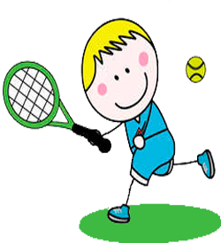

На главную
Большой Теннис

Большой теннис - красивый, зрелищный спорт, поклонниками которого являются миллионы человек во всем мире. Местом для игры служит ровная площадка, ограниченная линиями (корт) и окруженная пространством, называемым забегами. Большой теннис, в котором соперничают либо два игрока («одиночная игра»), либо две команды, состоящие из двух игроков («парная игра»). Задачей соперников (теннисистов или теннисисток) является при помощи ракеток отправлять мяч на сторону соперника так, чтобы тот не смог его отразить, не более чем после первого падения мяча на игровом поле на половине соперника.